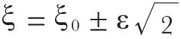
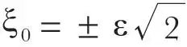

中文
中文A. S. Eddington
Editor’s Note
Arthur Eddington was by now the most distinguished astronomer in Britain. He had turned his attention to the problems thrown up by the new quantum mechanics. He quickly replied to Bhabha’s claim that quantum mechanics could not accommodate the behaviour of atomic particles at high energy with an account of how he proposed to deal theoretically with nuclei of all kinds, concluding that quantum mechanics was not in need of revision. Both Bhabha and Eddington were, unfortunately, unaware of the complications that would arise from the introduction of mesons into their developing theory. 中文
IN Dr. Bhabha’s letter in Nature of February 18, reference is made to a breakdown of quantum theory at high energies and short intervals. This seems to be widely interpreted as setting a limit to the validity of our present physical conceptions. Some indeed would associate it with a fundamental discontinuity of structure of space and time. I have no occasion to criticize Dr. Bhabha’s letter which, so far as it goes, is opposed to the more extreme interpretations. But I venture to suggest that an unnecessary mystery is being made of what is really an elementary point of relativity theory. In short, we know why the present theory has got into difficulties, and we know what must be taken into account if it is to get out of them. 中文
Relativity theory begins with a denial of absolute motion. Every observed velocity dx/dt is a relative velocity of two physical objects. Likewise the “x” of which velocity is the time-derivative is a relative displacement of two physical objects. Both objects are connected with the space-time frame in the way pointed out by Heisenberg; namely, they are not locatable as points (or, in four dimensions, worldlines) but have an uncertainty of position and momentum. 中文
Usually dx/dt and x are assigned to one of the objects (here called the object particle), the other being regarded as a reference body. In precise formulae, the reference body must evidently be a particle. The reference particle is then the physical “origin” from which the observable co-ordinate x of the object particle is measured. Current quantum theory has repeated the pre-relativity mistake of paying insufficient attention to the definition of the physical reference system to which its exact formulae are intended to apply. It enunciates formulae involving x and ∂/∂x, but omits to specify the standard deviation (uncertainty) of position and momentum of the origin from which x is measured. Clearly, the formulae cannot be true for an arbitrary standard deviation; if true at all, they must hold for a particular standard deviation of position ε which ought to have been specified. Since there is no explicit reference, the actual value of ε must be implicit in the empirical constants (such as h/mc) of the quantum formulae. 中文
When two object particles with co-ordinates x1 and x2 are considered, the displacement ξ0 of one relative to the other is observable independently of any origin of co-ordinates, being the original observable called “x” in our second paragraph. This must not be confused with the co-ordinate difference ξ = x2 – x1, which introduces twice over the uncertainty of the physical origin from which x1 and x2 are measured. We have (in the notation of the theory of errors)

The failure of current theory is due especially to its omission to distinguish the two observables ξ and ξ0. 中文
The physical origin has uncertainty both of position and momentum; for if either were zero the other would be infinite, and the physical origin would not approximate to a geometrical origin with a definite world-line. An energy m0c2 corresponding to the mean square of the uncertain momentum is therefore associated with the origin. Except in two-body problems (in which one object particle is used as physical origin for the other) the practice is to treat all the object particles symmetrically; the physical origin must then be an additional virtual particle, that is, a particle inserted in the system as part of the apparatus of measurement, but not counted among the object particles, and only taken into account as representing the disturbance of the system which the carrying out of a measurement implies. The energy m0c2 belongs to the physical origin contemplated as a virtual particle, and gives it a proper mass m0. In order that quantum equations may be definite, the uncertainty constants ε and m0 of the physical origin must have standard values. 中文
Naturally physicists who have neglected the uncertainty ε of the origin will find that their equations break down at distances of order ε. Nothing has gone wrong with space; it is the theorists who have failed to apply their own principles in relating the observable physical system to space. To state their failure summarily: there are two recognized principles of observability, namely, the quantum principle that an observable object has an uncertainty relation to the geometrical space-time frame, and the relativity principle that an observable quantity relates to two observable objects. Current theory recognizes these principles separately but not in combination; and in dealing with co-ordinates and momenta it pays attention only to the uncertainty at the object-particle end of the relation. 中文
The remedy is obvious. I do not say that the application of the remedy is an easy matter; but, if it is clearly the thing most worth doing, that will not deter anyone. An astronomer, unable to solve his own “problem of three bodies”, can only admire the success with which physicists tackle the more numerous closely interacting particles of the nucleus. But I think the advance would not be less rapid or less substantial if they gave up using the wrong formulae. My own work1 (chiefly concerned with the momentum uncertainty m0) has been confined to extra-nuclear problems; no insuperable difficulty has appeared, tough progress has not been easy. 中文
I turn now to the actual values of ε and m0. A geometrical frame of space-time is not a physical reference system, since its exactitude is incompatible with observability. (To assign infinite mass to the frame, so as to make both its position and velocity exact, would introduce infinite curvature, and defeat its use in a different way.) We turn it into a physical frame by associating with it uncertainty constants, namely, a particular length ε and a particular mass m0. (In mathematical treatment we should assign to the frame a wave function describing a probability distribution corresponding to these constants.) These “put the scale into” physical systems, and all other natural lengths and masses will stand in a definite numerical ratio to them. Since we observe only relative scale, the arbitrariness of the initial choice of ε and m0 is eliminated. From extra-nuclear investigations I have found that m0 is 10/136 of the mass of a hydrogen atom; and ε, which is very simply related to certain magnitudes calculated in cosmological theory2, has the value 1.10×10－13 cm. (For technical reasons, the constant more usually given is k0 = 2ε =2.20×10－13 cm.) 中文
That the virtual particle of mass m0, originally studied in extra-nuclear theory, is the particle now used in nuclear theory under the name of “mesotron”, or “meson”, admits, I think, of no doubt. But whether the usual assumption is correct, that nuclear mesotrons are the same as the actual mesotrons observed in a Wilson chamber, I have no means of judging. Since m0 and ε are conjugate, it is optional which we treat as the more fundamental; but I would point out that to proceed via the mesotron mass is a roundabout way of getting at the range of nuclear forces, since the range is an immediate manifestation of the uncertainty of position of the origin. The nuclear force between two protons comes from an energy-singularity occurring when two protons coincide—a sink which (in uniform distribution) just compensates the Coulomb energy occurring when they do not coincide. The condition of coincidence ξ = 0 gives

, which (for the calculated value of ε) agrees exactly with the range of force found by Breit, Condon and Present in their discussion of the scattering of protons. 中文
(143, 432-433; 1939)
A. S. Eddington: Observatory, Cambridge, Feb. 27.
References:
1. Eddington, “Relativity Theory of Protons and Electrons”, Chapters XI, XII.
2. Eddington, Proc. Roy. Soc., A, 162, 155 (1937).